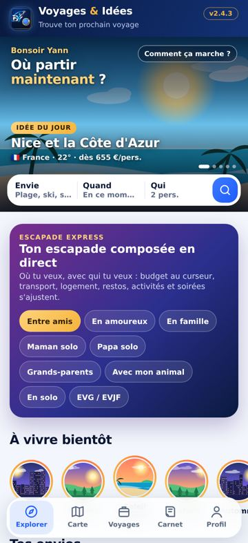
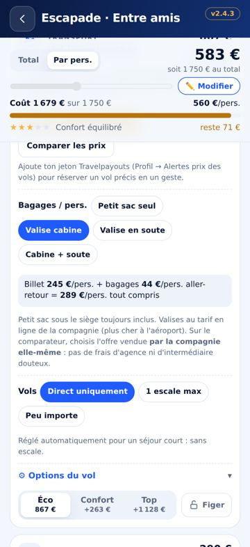
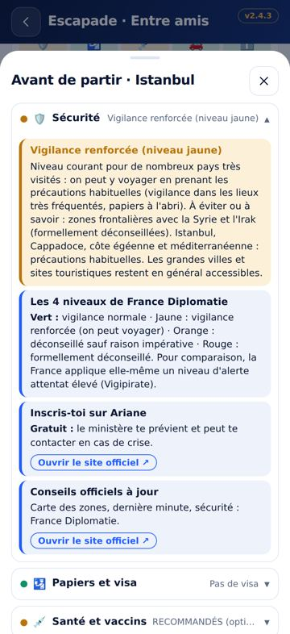

Vous savez quand partir, mais pas où ? Voyages & Idées propose des destinations adaptées à la période, au climat, à votre budget et à vos envies, puis vous emmène en quelques gestes vers la réservation du vol, du logement et des activités chez les grands sites de voyage.
Ce que fait l’application
Idées de voyage selon le mois, la météo souhaitée, le groupe (amis, couple, famille, solo…) et le budget
Escapade express : budget, transport, logement et activités composés en direct, prix par personne
Réservation pré-remplie : vols (compagnies et comparateur), hôtels, activités, location de voiture
Alertes de baisse de prix des vols
« Avant de partir » : sécurité, visas, vaccins, conduite, pour 300 destinations
Carte du climat dans le monde, voyages multi-étapes, budget, valise, carnet PDF

Accueil et idées

Escapade express

Avant de partir
Réservations
L’application ne vend rien elle-même : les liens ouvrent les sites partenaires (Aviasales, Booking.com, GetYourGuide, Viator…), avec vos dates et le nombre de voyageurs déjà remplis. Certains liens sont des liens partenaires : l’éditeur peut toucher une commission, sans surcoût pour vous.